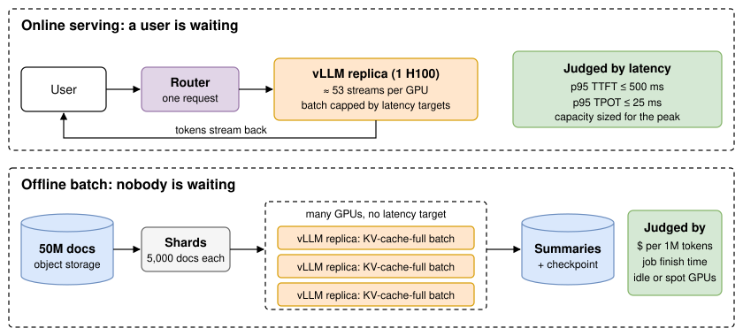
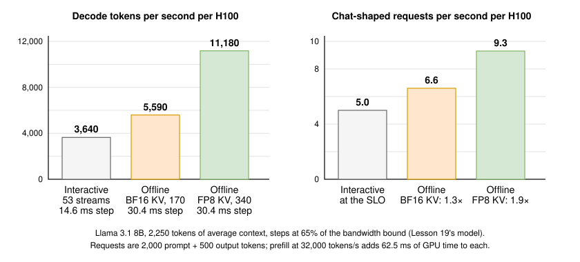
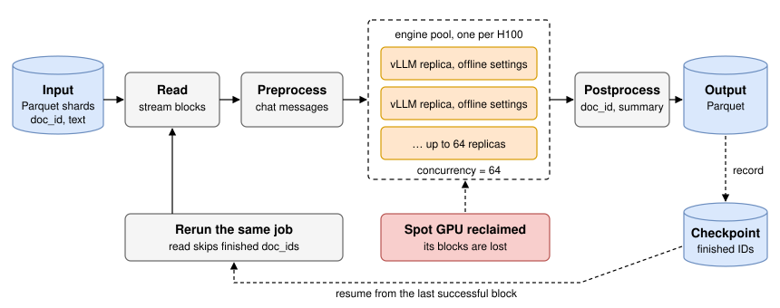
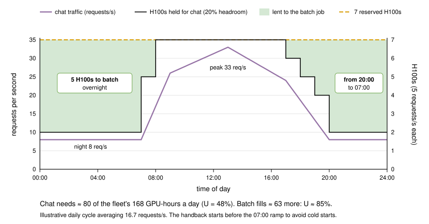

Batch and Offline Inference
Introduction
Most of this course has assumed a person on the other end of every request, watching tokens stream in. A large share of real inference has no one waiting at all. Nightly evaluations, labeling a training set, generating synthetic data, re-embedding a document store, and summarizing an archive of support tickets are all batch or offline inference: a fixed pile of inputs that must be processed by some deadline, measured in hours or days rather than milliseconds.
Removing the waiting user removes the latency targets. The engine can run bigger batches, the job can run on cheap interruptible GPUs or on GPUs the chat fleet leaves idle at night, and the figures of merit become tokens per GPU-hour, dollars per million tokens, and the time until the whole job is done. Figure 1 contrasts the two shapes of work.

In this lesson, we look at which workloads qualify, how to configure an engine for throughput and how much it gains, the offline APIs that run large jobs, how to share GPUs with interactive traffic, and what filling idle capacity really costs. We finish by planning a 50-million-document summarization job.
Clarifying the Problem
Batch questions often arrive as "we have a pile of text; how do we run it through an LLM cheaply?" Here is a typical exchange:
Candidate: What is the job, and how big is it?
Interviewer: Summarize 50 million archived documents. They average 1,800 tokens, we add the same 200-token instruction to each, and a summary is about 200 tokens.
Candidate: Which model, and how will we know the summaries are good enough?
Interviewer: Llama 3.1 8B Instruct, the model we already serve. A labeled sample of 500 documents defines the quality bar.
Candidate: When do the results need to be ready?
Interviewer: Within four weeks. Spending less matters more than finishing early.
Candidate: What GPUs do we have?
Interviewer: Our chat fleet runs on 7 reserved H100s, sized for the 33 requests per second we see at the afternoon peak. At night, traffic drops to about 8 requests per second. We can also rent more H100s, on demand or as spot capacity.
Candidate: Can the job slow down chat users?
Interviewer: No. Chat must keep its p95 TTFT under 500 ms and TPOT under 25 ms.
The question underneath is: how do we push 100 billion tokens through the model by the deadline, at the lowest cost, without hurting the users who are waiting?
Workloads Without a Waiting User
Batch workloads share three properties: the inputs are known in advance, another system consumes the results later, and nobody notices whether one request took 50 ms or 50 seconds. Typical examples are evaluations before a release (Lesson 40, Reliability and Rollouts), labeling and classification with short outputs, synthetic data from a teacher model with long outputs (Lesson 14, Distillation), embedding backfills, which are pure prefill, and summarizing archives, our job, with long inputs and short outputs.
Latency becomes, at most, a deadline for the whole job. What remains to optimize is the cost of the job's GPU-hours: how many tokens each GPU-hour produces and how much each GPU-hour costs. Table 1 summarizes the shift.
| Concern | Interactive serving | Batch and offline inference |
|---|---|---|
| Primary metric | p95 TTFT and TPOT within the SLO | Tokens per GPU-hour; cost per million tokens; job completion time |
| Batch size | Capped by the latency targets (about 53 streams per H100) | Capped by KV cache memory |
| Capacity | Provisioned for the peak, plus headroom | Whatever is cheapest: idle, spot, or rented for a few hours |
| Failures | A user sees an error | A shard is retried; only lost progress costs money |
| Interface | HTTP streaming API | In-process engine, job framework, or file-based batch API |
Table 1: Interactive serving compared with batch inference
Configuring an Engine for Throughput
Bigger batches, no latency cap
Our chat replicas run about 53 streams per H100, the most that keeps TPOT under 25 ms once prompt chunks are mixed in (Lesson 19, GPU Utilization). A batch job raises the two scheduler limits from Lesson 7, Continuous Batching: the sequence cap (--max-num-seqs) goes high enough that the KV cache decides how many requests run, and the per-step token budget (--max-num-batched-tokens) goes up so that each step carries large prompt chunks. vLLM already does part of this for offline use: on an H100, its LLM class defaults to a 16,384-token budget, twice the 8,192 of vllm serve [1]. Recent versions also offer --performance-mode throughput, which favors aggregate tokens per second at high concurrency [2].
How much does a bigger batch buy? Lesson 5, Tokens per Second, gives the bound for a decode step: it must read the weights once and the KV cache of every running request.
Here is 16.06 GB of weights, the number of running requests, their average context (about 2,250 tokens for chat-shaped requests), and the KV bytes per token (128 KiB in BF16). Following Lesson 19, we assume real steps reach 65% of the bandwidth bound:
- Interactive, 53 streams: 16.06 GB + 15.6 GB of KV cache takes at least 9.5 ms, about 14.6 ms at 65%: 3,640 tokens per second.
- Offline, BF16 cache full: about 170 requests fit (Lesson 3, KV Cache). 16.06 GB + 50.1 GB takes at least 19.8 ms, 30.4 ms at 65%: 5,590 tokens per second, 1.5× more.
- Offline, FP8 cache full: at 64 KiB per token, about 340 requests read the same 50.1 GB in the same 30.4 ms: 11,180 tokens per second, 3.1× more.

Each stream slows from 14.6 ms to 30.4 ms per step, but nobody is reading along. Two observations temper the result. First, at 53 requests the weights are already well amortized and KV reads dominate, so a bigger BF16 batch gains only 1.5×; the larger jump comes from halving the bytes per cached token. Second, decode is only part of the work. For our chat-shaped requests of 2,000 prompt and 500 output tokens, prompts take 62.5 ms of GPU time at 32,000 tokens per second (Lesson 19), so whole requests per second rise less: from 5.0 to 6.6 (1.3×) in BF16, and to 9.3 (1.9×) with an FP8 cache, as Figure 2 shows.
When bigger batches stop helping
A decode-heavy job, such as synthetic data with 1,000-token answers, gains close to the full 1.5× or 3.1×. A prefill-heavy job, such as summarization or classification, spends most of its time in prefill, which is compute-bound at any batch size; for it, and for embedding backfills, the levers are fewer prompt tokens and cheaper compute (Lesson 13, Quantization - FP8, INT8 and 4-bit), not the batch cap.
Our documents need 1,800 new prompt tokens each (the shared 200-token instruction is computed once and reused by prefix caching, Lesson 24) and 200 output tokens, with about the same context as a chat request. Per document:
- Interactive settings: 56.3 ms of prefill + 200 × 0.27 ms of decode = 111 ms, or 1,541 GPU-hours for 50 million documents.
- Offline, BF16 cache: 56.3 ms + 200 ÷ 5,590 s = 92.0 ms, or 1,278 GPU-hours (17% less).
- Offline, FP8 cache: 56.3 ms + 200 ÷ 11,180 s = 74.1 ms, or 1,030 GPU-hours (33% less), about 13.5 documents per second per H100.
Prefill is now 76% of the GPU time, so further batch tuning barely matters; the price of each GPU-hour does. Adding prefill and decode times is conservative, since chunked prefill overlaps some prompt compute with memory-bound decode steps, so measure a pilot run before sizing the job.
Before tuning a batch job, split its tokens into prefill and decode. Batch size and KV precision help decode-heavy jobs; prefill-heavy jobs need fewer prompt tokens, cheaper compute, or cheaper GPU-hours.
Offline APIs: from one GPU to a fleet
The simplest way to run a batch is to skip the HTTP server. vLLM's LLM class runs the engine inside a Python process: llm.generate() takes a list of prompts and llm.chat() a list of conversations, scheduled with the same continuous batching as the server [3]. vllm run-batch processes a JSONL file of requests in the OpenAI batch format, each with a custom_id, and writes responses keyed by the same IDs [4].
One GPU at 13.5 documents per second would need 43 days for our job. Large jobs need a framework that shards the input across many engine replicas, retries failures, and records progress. Ray Data provides this for vLLM: vLLMEngineProcessorConfig describes the engine, build_processor wraps it with preprocessing and postprocessing functions, and the concurrency setting sets the number of engine replicas [5]. Figure 3 shows the pipeline.

Checkpointing is what makes long jobs cheap to interrupt. Ray Data can record finished rows by an ID column for pipelines that start with a read and end with a write; rerunning the same code resumes from the last successful block [5]. Without a framework, write each shard's output with an atomic rename and skip shards whose output exists, as the first tab of In Practice does.
Hosted batch APIs
Model providers sell the same trade as a product. A batch API accepts a file of requests, processes it asynchronously within a completion window, and charges less than the synchronous API, because the provider can run the work whenever its fleet has spare capacity. At the time of writing, OpenAI's Batch API offers 50% lower costs with a 24-hour window and up to 50,000 requests per batch [6], and Anthropic's Message Batches API also cuts costs by 50%, with most batches finishing within an hour, a 24-hour expiry, and up to 100,000 requests per batch [7]. Terms change, so check them. A batch API fits when we lack GPUs or cannot host the best model for the task, and it sends the data outside our environment.
Sharing GPUs with Interactive Traffic
Priority scheduling inside the engine
The cheapest GPU-hours are the ones we already pay for. The finest-grained way to reuse them is to send batch requests to the chat replicas at a lower priority. vLLM supports this with --scheduling-policy priority: each request carries an integer priority, in the JSON body or the X-Vllm-Priority header, and lower values are handled first, with arrival time breaking ties [2][8]. Non-zero priorities are rejected unless the server uses the priority policy [8].

Figure 4 shows what the policy does and does not do. Waiting chat requests go ahead of waiting batch requests, and when running requests need KV blocks, the scheduler preempts the running request with the largest priority value first. But in the current scheduler, a chat request that arrives when the batch is full waits for room instead of evicting a running batch request [9], so batch work can still add queueing delay. The fix is on the client side: keep only a few batch requests in flight per replica, for example 8 of the 53 slots, and pause when the replica reports waiting requests (Lesson 29, Queue Depth). Batch requests here also run with interactive settings, so this mode suits small trickles of work, not a 100-billion-token job.
Filling the off-peak valley
The larger opportunity is the daily cycle. Our 7 reserved H100s exist for the 33 requests per second of the afternoon peak, but traffic averages about 16.7 requests per second and sits near 8 from evening to early morning. At 5 requests per second per H100, the night load needs 2 GPUs, with 20% headroom. Figure 5 shows the valley this leaves.

Here we lend whole GPUs rather than mixing requests, so the batch replicas can use offline settings. In Kubernetes, batch pods run with a lower PriorityClass than chat pods. When the autoscaler needs a GPU back (Lesson 22, Autoscaling), the scheduler preempts a batch pod, which receives its graceful termination period to finish or save work [10]. A scheduled floor that returns the GPUs at about 06:45, before the morning ramp, avoids making chat wait out a cold start (Lesson 23, Cold Starts). The valley holds about 63 GPU-hours a day: 5 GPUs for the 11 hours from 20:00 to 07:00, plus 8 GPU-hours on the evening shoulder.
This capacity is free only because the GPUs are paid for whatever happens: reserved, committed, or owned. A fleet of on-demand GPUs that scales down at night already saves that money (Lesson 20, Cost per Million Tokens), and its batch work belongs on spot capacity instead.
Spot and preemptible GPUs
Spot capacity is the other cheap source, reclaimed at short notice: AWS gives a two-minute interruption notice [11], and Google Cloud gives Spot VMs a best-effort shutdown period of up to 30 seconds by default [12]. A batch job tolerates this if no interruption loses much work. A shard of 5,000 documents takes about 6 minutes on one H100, so an interruption loses at most 6 GPU-minutes. Research systems migrate running requests between preemptible instances [13], but for offline work, small shards and an idempotent writer are enough. Spot H100s are not always available, so a job that relies on them needs slack in its deadline or an on-demand fallback.
What filling idle capacity costs
Lesson 20 showed that effective cost equals full-load cost divided by the utilization factor . Our 7 H100s cost $504 a day at an assumed $3.00 per H100-hour. Chat needs about 80 GPU-hours of work a day (16.7 ÷ 5 × 24), so is 48% and a million output tokens costs about $0.70, against $0.33 at full load. The valley adds 63 GPU-hours of batch work for no extra spend, raising to (80 + 63) ÷ 168 ≈ 85%. If we credit the batch job with what those hours cost on demand, $189 a day, chat's share falls to $315 and its cost to about $0.44 per million output tokens. Table 2 compares the options, using the FP8-cache plan of 1,030 GPU-hours.
| Option | GPU-hours | Price assumption | Job cost | Duration |
|---|---|---|---|---|
| On-demand H100s, interactive settings | 1,541 | $3.00 per hour | $4,620 | 24 h on 64 GPUs |
| On-demand H100s, offline settings | 1,030 | $3.00 per hour | $3,090 ($0.031 per 1M tokens processed) | 16 h on 64 GPUs |
| Spot H100s, 10% rework | 1,133 | $1.50 per hour | $1,700 | Depends on spot supply |
| Night valley of the chat fleet | 1,030 | Already paid | ≈ $0 extra | About 16 days at 63 GPU-hours a day |
| Hosted batch API, 50% off Lesson 20's assumed prices | None | $0.10 in, $0.30 out per 1M tokens | $13,000 | 500–1,000 batches, each within 24 h |
Table 2: Ways to run 50 million summaries (all prices are assumptions)
The hosted API row counts all 2,000 prompt tokens per document (100 billion) at $0.10 per million and 10 billion output tokens at $0.30 per million. Self-hosting wins here mainly because our input tokens cost about $0.03 per million to process (Lesson 20), far below the assumed API price.
How should we run a 50-million-document summarization job?
We run it ourselves, in the night valley of the chat fleet, with spot H100s as a backup. A pilot of 10,000 documents on one GPU first measures real throughput and checks the summaries against the 500 labeled examples, with and without the FP8 KV cache. If FP8 passes, the job needs about 1,030 GPU-hours, which the valley supplies in about 16 nights, inside the four-week deadline, at no extra GPU cost. It runs as a Ray Data pipeline of vLLM replicas in offline settings, over 10,000 shards of 5,000 documents, checkpointed by document ID, in pods with a low PriorityClass that hand the GPUs back at 06:45.
If the job falls behind, spot H100s finish the remainder; even the whole job would cost about $1,700 there. The hosted batch API is the choice only if the archive may leave our environment and the best summarizer is a model we cannot host; at these assumed prices it costs about four times the on-demand option. We do not trickle this job into chat replicas: at 100 billion tokens it would hold slots chat users need, with interactive settings.
In Practice
The first tab runs the job on one GPU with vLLM's LLM class, shard by shard, skipping shards that are already done. The second runs the same job across many GPUs with Ray Data, with checkpointing by document ID; it needs Ray 2.53 or later [5]. The third is a client that trickles low-priority batch requests into an interactive vLLM server started with --scheduling-policy priority, keeping only a few in flight.
import glob
import json
import os
from vllm import LLM, SamplingParams
INSTRUCTION = "Summarize the document in at most 150 words. Keep names, dates and amounts."
llm = LLM(
model="meta-llama/Llama-3.1-8B-Instruct",
max_model_len=4096,
gpu_memory_utilization=0.90, # set explicitly; recent vLLM defaults to 0.92
max_num_seqs=512, # let KV cache memory, not this cap, limit the batch
max_num_batched_tokens=16384, # large steps: prefill dominates this job
enable_prefix_caching=True, # the shared instruction is computed once
kv_cache_dtype="fp8", # only after the pilot evaluation passes
)
params = SamplingParams(temperature=0.0, max_tokens=300)
def run_shard(in_path: str, out_path: str) -> None:
with open(in_path, encoding="utf-8") as f:
docs = [json.loads(line) for line in f]
conversations = [
[{"role": "system", "content": INSTRUCTION},
{"role": "user", "content": d["text"]}]
for d in docs
]
outputs = llm.chat(conversations, params, use_tqdm=False) # same order as inputs
tmp = out_path + ".tmp"
with open(tmp, "w", encoding="utf-8") as f:
for doc, out in zip(docs, outputs):
f.write(json.dumps({"doc_id": doc["doc_id"], "summary": out.outputs[0].text}) + "\n")
os.replace(tmp, out_path) # atomic: a shard is either done or not
for in_path in sorted(glob.glob("shards/*.jsonl")):
out_path = in_path.replace("shards/", "summaries/")
if os.path.exists(out_path):
continue # finished before an interruption
os.makedirs(os.path.dirname(out_path), exist_ok=True)
run_shard(in_path, out_path)Other Talking Points
If there is extra time at the end of the interview, here are some additional talking points:
- Throughput-oriented systems such as FlexGen offload weights and KV cache to CPU memory and disk to run very large batches on a single GPU, trading latency for throughput [14].
- Evaluation jobs before a release are batch jobs that sit on the critical path of a rollout, so they deserve dedicated capacity at release time (Lesson 40, Reliability and Rollouts).
- Greedy decoding with pinned model and engine versions makes reruns of failed shards reproducible enough to compare.
- Larger teacher models for synthetic data, such as Llama 3.1 70B, are decode-heavy and gain the most from offline settings and FP8 (Lesson 14, Distillation).
- Counting tokens per job and per team turns batch work into a chargeback line, the same way per-request accounting does for chat (Lesson 31, Per-Request Token Accounting).
Summary
- Batch workloads have no waiting user, so they optimize tokens per GPU-hour, cost per million tokens, and job completion time instead of TTFT and TPOT.
- Offline settings let KV memory, not a latency cap, limit the batch. For Llama 3.1 8B on an H100, decode rises from about 3,640 tokens per second at 53 streams to 5,590 with a full BF16 cache and 11,180 with an FP8 cache.
- Prefill-heavy jobs gain less: our summaries take 111 ms per document with interactive settings and 74 ms with offline settings and an FP8 cache, 1,030 GPU-hours in all.
- vLLM's
LLMclass andvllm run-batchrun jobs on one machine; Ray Data shards them across many engines and checkpoints progress by ID. - Priority scheduling lets batch requests share interactive replicas, but a waiting chat request does not evict running batch work, so limit batch requests in flight.
- Lending a reserved fleet's night valley to batch raised utilization from 48% to 85% and cut chat's cost from about $0.70 to $0.44 per million output tokens.
- Spot GPUs suit batch work with small, idempotent shards; hosted batch APIs offer about 50% discounts within a 24-hour window.
Reference Material
[1] vLLM source: EngineArgs batch defaults by usage context (vllm/engine/arg_utils.py). https://github.com/vllm-project/vllm/blob/main/vllm/engine/arg_utils.py.
[2] vLLM documentation: vllm serve. https://docs.vllm.ai/en/latest/cli/serve/.
[3] vLLM documentation: Offline Inference. https://docs.vllm.ai/en/latest/serving/offline_inference.html.
[4] vLLM documentation: OpenAI Batch example. https://docs.vllm.ai/en/latest/examples/features/openai_batch/.
[5] Ray documentation: Working with LLMs. https://docs.ray.io/en/latest/data/working-with-llms.html.
[6] OpenAI documentation: Batch API. https://developers.openai.com/api/docs/guides/batch.
[7] Anthropic documentation: Batch processing. https://platform.claude.com/docs/en/build-with-claude/batch-processing.
[8] vLLM documentation: OpenAI-Compatible Server. https://docs.vllm.ai/en/latest/serving/online_serving/openai_compatible_server/.
[9] vLLM source: V1 scheduler (vllm/v1/core/sched/scheduler.py). https://github.com/vllm-project/vllm/blob/main/vllm/v1/core/sched/scheduler.py.
[10] Kubernetes documentation: Pod Priority and Preemption. https://kubernetes.io/docs/concepts/scheduling-eviction/pod-priority-preemption/.
[11] Amazon Web Services documentation: Spot Instance interruption notices. https://docs.aws.amazon.com/AWSEC2/latest/UserGuide/spot-instance-termination-notices.html.
[12] Google Cloud documentation: Spot VMs. https://docs.cloud.google.com/compute/docs/instances/spot.
[13] Miao et al. SpotServe: Serving Generative Large Language Models on Preemptible Instances. https://arxiv.org/abs/2311.15566.
[14] Sheng et al. FlexGen: High-Throughput Generative Inference of Large Language Models with a Single GPU. https://arxiv.org/abs/2303.06865.
![ask alex]()
![ask alex expend]()